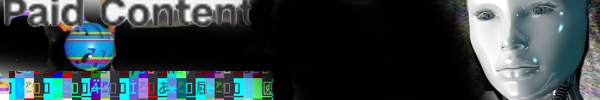

👹 ARTSTUFF.WTF

FRI 1/27
Hammer Projects: Simon Denny
Hammer Museum
11am - 8pm (weekends: 11am - 5pm. Exhibit through Apr 23)
FREE
The work of New Zealand born, Berlin-based artist Simon Denny is driven by the landscape of contemporary media culture. Considering the economic and social implications of recent information technologies, Denny’s research-based projects and exhibitions offer critical insight into the conditions of exchange and the production of knowledge in the digital world. Through a process that renders the immaterial flow of information into visible and tangible objects, Denny’s sculptural installations often approximate the visual language, style, and forms that are integral to the Internet and the culture that surrounds it. For the artist’s first solo presentation in Los Angeles, Denny presents a project based on the possibilities of blockchain—a technology that underlies the cryptocurrency bitcoin—and its potential applications in the future. Built around three real-world companies, Denny’s installation adopts the presentational mode of trade-fair information booths to convey the ethos and tenor of each vision for the future of blockchain.
INFO
Perpetual Dawn: TV Party! Dntel Kron Kid606 Dahlia
UNION
8pm - 2am
FREE before 9pm / $10 after
Dance party and live sets. Dntel - Live Set. (Long-time experimental electronic artist and DJ. Member of The Postal Service, Headset, Figurine. Expect synths, gears, and maybe vocals) Kron - Live Set. and residents Kid606, Dahlia, Eric Parren
INFO

SAT 1/28
FAR BAZAAR
Cerritos College Art Building
10am - 10pm (Saturday and Sunday)
FREE
In February of 2017, after over 55+ years of use, Cerritos College will be retiring and demolishing its existing Fine Arts complex. This mid-century modernist structure, now sits side-by-side with its replacement, a massive new Fine Arts building to be completed in December 2016. Before the old building is torn down, however, Cerritos College, with the help of FAR, will transform every abandoned classroom, faculty office, and administrative space into temporary exhibition spaces, each to be guest-curated by local art collectives and alternative art spaces, as well as the graduate programs from regional universities and art schools. PERFORMANCES, ART BOOK FAIR, GALLERIES, INSTALLATIONS, FOOD TRUCKS, MORE
INFO
Jesse Fleming - Jane The Baptist
Five Car Garage (RSVP needed)
5pm - 8pm
FREE
Jane the Baptist is a sci-fi-techno-ecstatic voyage through the birth canals of modern automated car washes within Los Angeles County. The view is myopic, brutal, and candy lush with frothy synthetic ooze delivered by an attentive robotic hand. It is unending and internal, providing a transcendent passage to see extraordinary in the mundane. The original musical score by Miguel de Pedro/Kid606 delivers an accompanying tone that is dizzying, with both ascending and descending notes. Together it is a world gone mad but simultaneously beautiful and hypnotic, like a drive down the Sunset Strip.
INFO

SUN 1/29
Art Los Angeles Contemporary Fair
Barker Hanger
11am - 6pm (Jan 26 - 29)
$25
Art Los Angeles Contemporary, now in its eighth year, is the International Contemporary Art fair of the West Coast. Galleries, performances, talks, more. Dozens of participating galleries.
INFO

ABOUT
ARTSTUFF.WTF is a minimal website listing page for selected art (and etc) events going on around Los Angeles. It is a personal list of 4 - 6 events sent out to friends weekly, and made available online here for bookmarking and quick reference. There is an archive of past listings. Sign up to receive weekly emails.